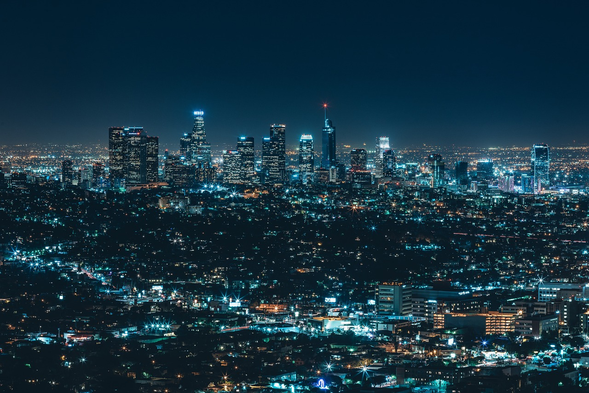

Este proyecto se centra en la creación de un complejo de apartamentos eco-amigables en el corazón de la ciudad. Utilizando energía solar, sistemas de recolección de agua de lluvia y espacios verdes integrados, "Horizonte Verde" busca ser un ejemplo de sostenibilidad urbana y confort moderno